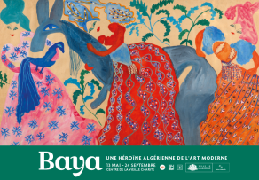
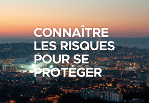

EDUCATION
Rejoignez le Conseil marseillais de la vie étudiante, la Ville de Marseille vous donne la parole !

CULTURE
"Baya. Une héroïne algérienne de l'art moderne" au Centre de la Vieille Charité

EDUCATION - CULTURE
Profitez des bibliothèques gratuitement, toute l'année !

ENVIRONNEMENT
La voie est libre : profitez de la Corniche piétonnisée ce dimanche 19 novembre

Mairie
Marseille - Le magazine des Marseillaises et des Marseillais

EDUCATION
La Ville de Marseille poursuit son engagement contre la précarité étudiante

ENVIRONNEMENT
La Ville de Marseille engagée pour la prévention des risques majeurs

CULTURE